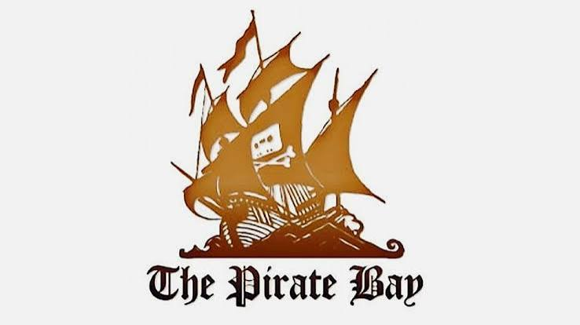

In this article
Paying more and owning less
I want to support the films, programmes, games and music I love. I buy physical media, pay for subscriptions and collect editions of things that genuinely matter to me. My support for piracy does not come from believing that creative work has no value or that the people making it do not deserve to be paid.
It comes from watching legitimate media services become increasingly expensive, fragmented and hostile towards the people paying for them.
Almost every company now wants its own subscription. One programme is available through Netflix, another is on Disney+, something else requires Amazon Prime, and the film you actually wanted is hidden behind an additional rental fee despite the subscription you already pay. A series can then move somewhere else, disappear when a licence expires or become unavailable in your country altogether.
You can pay repeatedly and still end up with nothing permanent to show for it.
That is difficult enough for anybody on a limited budget. It feels worse when a company uses words such as “buy” or “purchase” for something that remains tied to an account, application and platform over which the customer has no control.
A physical disc is an object. I can put it on a shelf, lend it to somebody, take it to another house, watch it without an internet connection and keep it even if the shop that sold it closes down.
A digital purchase is often permission to access something under a particular set of conditions. I may be able to stream or download it inside an approved application, but that does not necessarily give me an independent file, the right to move it elsewhere or any guarantee that the same platform will exist forever.
British consumer law does provide protections for paid digital content, including requirements that it should be of satisfactory quality and match the description given by the seller. That is valuable, but it does not make a platform-dependent licence equivalent to owning a physical copy that remains under my control.
The Venture Bros. pre-order
I learned the difference in a particularly frustrating way through The Venture Bros.: Radiant Is the Blood of the Baboon Heart.
I had been waiting for the film and wanted a physical copy to sit alongside the rest of my collection. I found what I believed was the Blu-ray release on Amazon. The listing displayed a Blu-ray case and included product information such as the media format and number of discs. I left it sitting in my basket for several days before finally deciding to pre-order it.
The release date arrived and then passed, but no disc came through the post.
Instead, Amazon sent me an email announcing that my product key was ready.
At first, I assumed the code was a digital copy included as an extra with the physical release. Plenty of Blu-rays include a code in the case, so that seemed like the most reasonable explanation. It was not an extra. The code was the entire product.
Rather than receiving the Blu-ray I believed I had ordered, I had purchased access to the film through an Amazon Prime account. There was no case to display, no disc to keep and no independent copy that I could watch using whatever equipment I chose.
Looking at the product page again while writing about the experience, I could see a clearer choice between the Prime Video and Blu-ray versions near the price. I do not remember that distinction being as visible when I originally placed the pre-order.
I cannot prove what the page looked like at that exact moment, and I am not claiming that somebody deliberately changed it afterwards. What I can say is that the images, product details and receipt I saw left me expecting a physical Blu-ray, while the product delivered to me was a code.
That gap between expectation and reality is the problem.
The word “purchase” made me feel as though I was buying a copy of the film. What I had actually bought was conditional access to it inside somebody else’s system.
The problem is bigger than one mistaken purchase
The Venture Bros. incident was annoying, but it was not the sole reason I began thinking differently about piracy. It was simply a very clear example of how little control a customer can receive in exchange for their money.
The wider problem is that legal access can disappear for reasons that have nothing to do with the viewer.
A licence expires. A distributor changes. A service closes. A programme is removed for tax or business reasons. A game requires a server that no longer exists. An application is delisted. A film remains available in one country but vanishes in another. A revised edition replaces the original, leaving no authorised way to see the version people remember.
The customer has paid, but the companies involved still control the doors.
This creates a strange situation in which an unauthorised copy may be more permanent, portable and convenient than the version somebody legally purchased. The pirated file can sometimes be stored, backed up and played independently, while the paid version continues to ask permission from a remote account.
That does not automatically make copyright infringement legal or harmless. It does show why telling people to “just pay for it” is no longer a complete response.
Sometimes people did pay for it. They simply discovered that payment did not provide ownership.
Piracy as preservation
One of the strongest arguments for piracy is media preservation.
Countless games, programmes, films, books and pieces of software are no longer commercially available. They may be trapped on obsolete hardware, abandoned by their publishers, removed from online shops or prevented from receiving a new release by complicated ownership disputes.
If nobody copies and preserves that material, it can disappear.
Large companies are not always reliable archivists of their own work. Preservation is expensive, and maintaining access to an old title may offer little immediate profit. Fans, collectors and online communities often preserve material because they care about it, not because they expect to make money from it.
There is an obvious legal and ethical difference between preserving an unavailable television broadcast and uploading a brand-new independent film while it is still being sold. I do not think every act commonly placed under the word “piracy” is morally identical.
Preservation does not erase copyright, but copyright lasting longer than the commercial life of a work creates a genuine cultural problem. If a company refuses to sell something, provides no legal way to access it and has no intention of preserving it publicly, unauthorised archives may become the only reason it survives.
Geographic restrictions and censorship
Where somebody lives can determine whether they are permitted to access a piece of culture.
Films, television programmes, games and books may be legally available in one country but unavailable in another. Sometimes that is caused by licensing agreements. In more serious cases, governments or distributors restrict access for political, religious or cultural reasons.
The internet gives us the technical ability to share information globally, while media licensing often attempts to rebuild national borders around it.
It is difficult to argue that somebody has caused a lost sale when the rights holder has given them no legal way to make that purchase in the first place. The same applies when an old programme is available only through a service that does not operate in the viewer’s country.
Piracy can bypass those restrictions. That does not remove the associated legal risks, but it explains why the demand exists.
Subscription fragmentation created its own backlash
Streaming originally became popular partly because it offered a convenient alternative to piracy. Instead of searching through unreliable websites or waiting for downloads, a customer could pay one reasonable monthly fee and immediately access a large library.
That arrangement worked because the legal option was easier.
As more companies removed their catalogues to create separate services, that convenience began to disappear. The customer was expected to maintain multiple subscriptions, remember where each programme had moved and accept that content could still vanish without warning.
Piracy did not create that fragmentation. Fragmentation made piracy attractive again.
This does not mean every subscription service is worthless. Some offer excellent libraries, fund original work and provide an easy way to watch programmes. The problem begins when customers are expected to pay more services for less dependable access while being told that the inconvenience is somehow progress.
The most effective response to piracy has rarely been punishment alone. It is providing a service that is reasonably priced, convenient and better than the unauthorised alternative.
Can piracy help creators?
The economic effect of piracy is more complicated than the claim that every unauthorised download represents one stolen sale.
Some people who download something would never have paid for it. Others use unauthorised access to discover work and later buy physical editions, merchandise, concert tickets, sequels or other releases. Some replace a lost copy of something they already purchased. Others unquestionably use it as a substitute for a purchase they could have made.
Those situations should not all be counted as though they are identical.
Author Neil Gaiman has spoken openly about discovering that unauthorised sharing did not affect his work in the simple way he once assumed. He observed growing sales in places where his books were widely shared and compared discovery through file-sharing with finding an author through libraries, borrowed books or copies passed between friends. His point was not that every creator must approve of piracy, but that exposure can sometimes create future readers rather than merely eliminate sales.
Research publicised by Indiana University also modelled circumstances in which a moderate amount of piracy could benefit both manufacturers and retailers by limiting excessive mark-ups within a supply chain. That is a specific economic model, not proof that piracy always increases profits, but it does challenge the idea that its effects are universally simple or entirely negative.
I would still be wary of using “exposure” as a blanket excuse, particularly when dealing with independent creators who depend directly on a relatively small number of sales. The size and behaviour of the rights holder matter. Downloading an unavailable twenty-year-old television series is not the same situation as distributing a new game made by two people trying to recover its development costs.
Supporting piracy does not require pretending that context is irrelevant.
What pirating media actually involves
At a general level, downloading pirated media usually involves three parts: a method of reducing how much browsing activity is exposed, somewhere that indexes or shares files, and software capable of downloading them.
A VPN is commonly used to route internet traffic through another server, although it should not be treated as magical invisibility or as something that makes copyright infringement legal. Torrent programs download and upload pieces of a file between users rather than retrieving the complete file from one conventional server.
I have personally used NordVPN, while torrent clients such as BitTorrent, µTorrent and Transmission all offer different interfaces and features. However, naming software is the easy part. The difficult and dangerous part is deciding which sources and files can be trusted.
I am deliberately not turning this article into a directory of piracy websites or a step-by-step set of downloading instructions. These parts of the internet still resemble the Wild West of the older web: less centralised, less polished and less predictable than the heavily monitored collection of platforms most people use today.
That freedom comes with actual risks.
Torrenting copyrighted material can infringe copyright, and copyright holders can take action when their work is used without permission. The UK Intellectual Property Office describes infringement as using the whole or a substantial part of a protected work without permission where no legal exception applies.
There are also practical dangers unrelated to copyright. Fake download buttons, malware, misleading filenames, invasive advertising and files disguised as something else are common hazards. A VPN does not make a malicious file safe, and using a privacy-focused search engine does not prove that a website is trustworthy.
Anybody exploring that part of the internet needs to understand that privacy, legality and computer security are three separate issues. A tool addressing one does not automatically solve the other two.
Preservation without piracy where possible
There are legal ways to support many of the same goals.
Physical media remains one of the clearest forms of personal ownership. Libraries provide access without requiring every reader or viewer to buy an individual copy. Public-domain archives preserve material whose copyright has expired or which has been released for reuse. DRM-free shops allow customers to retain independent files. Second-hand markets keep discontinued media circulating, while fan campaigns can demonstrate demand for proper reissues.
I use the Internet Archive extensively for my own projects because it contains an enormous range of historical media, public-domain material and user-preserved collections. However, the presence of a file on an archive does not automatically settle its copyright status. The uploader, age of the work, country and rights attached to it still matter.
My preferred outcome is not a world where creative work becomes worthless. It is a world where paying customers receive a fair, clearly described and durable product.
If companies offered reasonably priced downloads without restrictive account locking, maintained access to previous purchases and made older catalogues genuinely available, many of the reasons people turn to piracy would become weaker.
Why I support piracy
I support piracy because the issue is larger than people wanting free entertainment.
It is about access, preservation, ownership, censorship, pricing and the steadily disappearing distinction between buying something and temporarily receiving permission to view it.
I understand why creators need to be paid. I want the people behind the things I love to be able to continue making them. At the same time, I understand why consumers become tired of buying the same work through another format, another subscription and another account, particularly when none of those payments guarantees permanent access.
I do not believe every example of piracy is automatically justified. I do not believe every download is a heroic act of cultural preservation. Sometimes people simply do not want to pay for something that is readily available, and independent creators can be hurt when their work circulates without support.
But I also reject the idea that every unauthorised copy is identical to stealing a physical object or represents a full-price sale that would otherwise have happened.
The question I keep returning to is simple:
If I pay for a film, what have I actually bought?
If the answer is a revocable licence, tied to one account, inside one company’s application, then the industry should stop presenting that transaction as though it offers the same ownership as a disc on my shelf.
I would rather see honest labels, fair prices, DRM-free purchases, dependable libraries and copies that customers can actually keep. I would rather see creators properly paid without audiences being divided between an endless collection of subscriptions.
Until that happens, the conversation about piracy cannot be separated from the way media is sold.
If buying is not owning, companies should not be surprised when people stop treating unauthorised copying as theft.